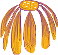

Identifiant: Mot de passe:
Copyright © 2000-2015 Regents of the University of California. All rights reserved.The wind blew
I caught the feeling of you
il faisait beau quand l’on s’est connu- il faisait chaud quand l’on s’est connu- il faisait summer when we met- the harvest- il was ripe.
il faisait just the right temperature- était justtheripetime- nous étions just the right position relative to stars- i was ready for reality- to evaporate from the gray orsometimes black asphalt of our city (that was our park, our tree, our place in stars) and give way to the false, onceburied, nowsurfacing world in my mind.
i hung from the real world as from cloth- and i hung there as long as i could hold on to you- puis chute libre, foudroie-moi, the insonorise. toi absent, moi absent– absent from the day, absent from my dreams. every place where you are not stands on the scale and weighs itself less you- it is not home. like a Jew i must find you beneath and within every surface, thinking to the place where you are, building it in my mind, my altar to you- i look at you- imagine the motion of your face for hours- repetitions of your smile, rewinding through your tears shedding up- you loop- everything, the surface, an expression of you
i try to scratch it but how can i scratch it? imagined myself crying in fifteen different locations over you as if i could summon you to my side with my tears, my salty wet finger lifting you from a film of dust, you under my bed, in the corner where my wet knuckle claws- hypothesis: reminded of you by the train- hypothesis: in the shower, running water, forehead against the floor- hypothesis: sitting in the car, an acoustic guitar lifts me only to let me go- hypothesis: collapse into another’s arms so heavy we stop walking past trees and lampposts but they keep moving in the night as I (need to) weigh down, exhale- i hypothesized, but my body is dumb, unresponsive, not mind, not mine.
I’d like you to begin with your eyes open, and just taking a great deep breath. Breathing in through the nose, and out through the mouth. As you breathe in, just feeling the lungs expand as they fill with air. And as you breathe out, just feeling the body soften a little bit as you gently close the eyes. If you would just allow the breath to return to its natural rhythm, in and out of the nose. And as you pause for a moment, just noticing the feeling of the body. The weight of the body pressing down against the seat beneath you. Contact of the feet on the floor. The hands and the arms and the legs. Noticing any sounds around you. As you pause, just noticing how the body feels. Starting to notice how the body’s breathing, that movement– of breath in the body. Some people feel it in the stomach. For others, it’s in the chest or around the diaphragm. Not breathing in any special way. We’re just starting to notice that rising and falling sensation. If you can’t feel anything, try just gently placing your hand on the stomach. As you follow that movement, the mind will wander away. Almost inevitably. No problem if it does, perfectly natural. But as soon as you realize it’s wandered, just acknowledging that, letting it go, and just coming back again to that rising and falling sensation. And just for a moment now, letting go of any focus on the breath, just letting the mind do whatever it wants for a few seconds. If it wants to think, let it think. And then bring the attention back to the body. Back to that feeling of contact. Back to any sounds around you. And you can just gently open your eyes in your own time.
Poème-corpsqu’est-ce que tu es beau
j’ai envie de ta peau
voilà mes épaules et ta tête qui s’y enfonce- debout, ton corps pèse gravité vers le mien et je sais que tu entends battre mon coeur quand je te prends la main– dans le lit où l’on vit tu déclenches tes paupières jusqu’à en faire la frontière d'un monde- et moi papillon je bouge pas encerclé yeux fermés mais j'arrache enfin ce continent de toi et je m'asseois sur son terrain. je ressens l'herbe- son odeur- main contre ventre, bras, épaule. tu inspires mon haleine et je m’éloigne vers toi
et vers mes oreilles
se faufilent tes pensées
barbe et toile-poils d’où parvient ta peau blanche comme des planètes éloignées mais ardentes, fissure dans la nuit, dans la rue, vrombissement- tête qui tourne- squelette slip cils dents hanches langue nez nez nez chapeau texto. dans la station de métro où on attend le train je deviens solipsiste car tu me conviens tant que j'arrive à douter que tu existes: es-tu dieu? apparition? corps? simulation? je me suis déshabillé jusqu’aux chaussettes pour monter l’escalier le plus silencieusement possible vers toi
tu relâches le verrou
et serpentes dans ma nuque
on s'ouvre. quand tu n’es pas là j’évoque ton image pour m’endormir quand même contre toi– je descends dans ta chair jusqu’à la croire mienne, je t’écris des poèmes pour les inscrire sur ton corps quand tu dors un seul doigt c’est ça mon stylo– et tu ne t’en aperçois même pas tu ignores la structure de ta chair les mots les lettres les formes qui composent tes os bah tu ignores ce que tu es et tu es mon poème toi
avec mes lèvres
je te célèbre
je prononce ton corps-poème
I do not order the orange chicken;
I abstain from the pad see ew.
Instead, I hang back in this red linen chair
And quietly watch you chew.
In one fatal breath, at the summit of a prolonged, uphill battle, he releases her: her, water-born into an ocean of flowers, followed by glitter afterbirth bubbling to the surface with relief, like champagne, like sighs.
***
The calm rhythm of the window AC unit; the interference of the paper strips woven through its grill, floating in its breeze. His sisters smacking glossed lips and sugar lip straps, admiring themselves in the greasy mirror as he lay idly on the carpet, gazing up.
***
He could hardly help himself. His physical presence had always unsettled him and made him pray for the absence of a body. He was cosmically punished by unwanted hairs, resistant to the tonic of razors and insulted by aftershave. He clawed his nails into his forehead until he hit bone, tracing scar tissue constellations between the pimples on his temples. The universe whispered hope into the faultlines on his face.
Meanwhile, the boy looked to the sky for solutions but remained spellbound to his bed in the depression of the afternoon, the depression of dusk, the depression of eveningtime, and the depression of dawn... sinking into his mattress, he held on for dear life by the blood and the dirt beneath his fingernails. He looked up, and: illuminated by moonlight, the stars hung as if suspended from invisible fishing lines, bustling with the energy of live bait. In the cool, crystalline wind, they spun with the slow swing of a children’s mobile. When their shimmering light captured his eyes, he knew: they were cast by a God who was specifically sending for him. From his bed, he contemplated biting.
But his corneas had rotten yellow, irises dried to marbled rye. His eyebrows had been shaved off and resown with industrial staples, and his gaze had been weighed down with the residue of shame. Discouraged by the inimitable ease of his sisters and the stubborn, unliftable covers of his bed, perplexed by the celestial hooks dangling just beyond his reach night after night, he shrunk: auto-lobotomized, elbows in his palms, breath held tenuously like marbles, oxygen trapped in his alveoli for want of that safe, enclosed feeling, the pressure in his diaphragm condensed into rock, the mineral painfully, painfully cold against his unwanted flesh.
***
Vomit. The clanking of the rocks long stored within him striking the ceramic toilet bowl, diamond and quartz and onyx and obsidian pressure-cooked in his anxious belly now sinking to the uncharted depths of flush. The crackle of kidney stones dissolving into water. Him, a hundred pounds lighter, standing upright.
***
He could never have prepared himself for what she would be, but she was not necessarily mystery, for he had long witnessed her in the making, noticed the details of her latent genesis, and contemplated her arrival. In his mind, it was beautiful: there would be flowers in her armpits, and in the place between her legs; there would be seeds stuck in her tear ducts (for sobs that came out dead). He would crown her with thorned roses, and anoint her with his lips. She would be here, and at last, he would eclipse.
two dogs eating each other
their motion is a graceful dance
bad dog gets fat the more i starve it
its neck on walks too thick and stubborn to be leashed
my foot smothers the dog into a corner, its spot,
its body bearing upon paper walls an anvil
that lands on printers and television sets abandoned curbside
crushing their plastic skeletons like a cheap coffin’s wood
it barks and runs away laughing, giggles and shattering glass
it shits love messages in the street
but i am confident the rain will wash them all away
harmony always restored on this earth
i tried to untrace all evidence of its existence
i let the cold sun melt its passport into the river
and hid its medical bills beneath a rock in the pond
i shredded every document and igniting the paper mass
i wet and dirtied my fingers, laying
each burning page down in the puddle, gentle as film
watched fire and water compete for the body
watched it grunt, exhaling smoke
one page burned slowest, suffering for an hour
and i will never know why, will never know what
so dared to refuse to be consumed
i bury its ashes among grounds of soil
and make believe the remains are biodegradable
a well intentioned badjew atoned too early–
he asked a very bad dog for forgiveness
and then turned off his phone
I walked across the ring of eggshells in the glade
How simple to deny its power to contain
I broke my bones and ignored the sound it made
In the safety of the meadow I would no longer stay
From its backlit maze I emerged still a child
I walked across the ring of eggshells in the glade
Long staked between us, the old oak had decayed
We let our backs bleed, scabbing into its bark
I broke my bones and ignored the sound it made
Through the no go zone I dared to wade
Clouds of hot soot extinguished me, soft as an exhale
I walked across the ring of eggshells in the glade
Our hands contorted incubate two grenades
There was no reason or way to cover my ears
I broke my bones and ignored the sound it made
I hopped the turnstile, kneeled, and prayed
That one day at remains I’d look back unafraid
I walked across the ring of eggshells that you laid
I broke my bones and ignored the sound it made